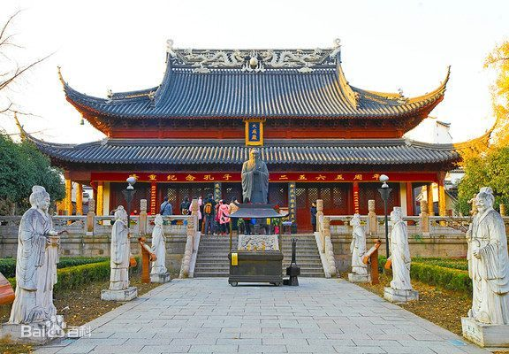
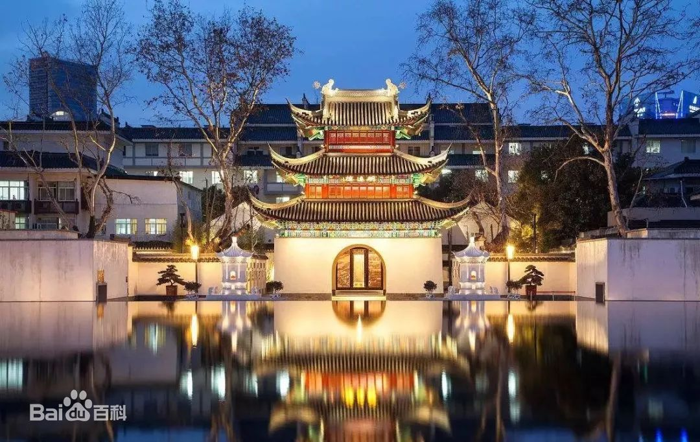
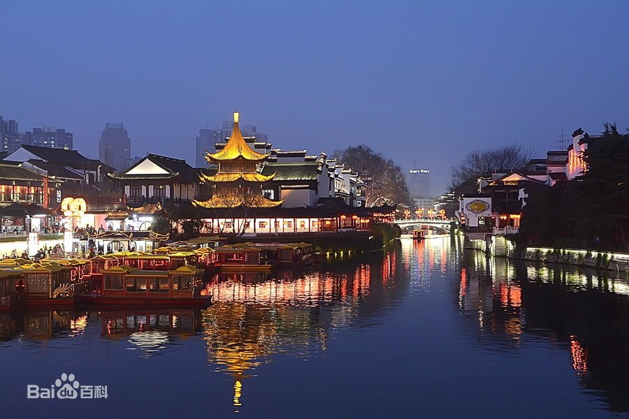
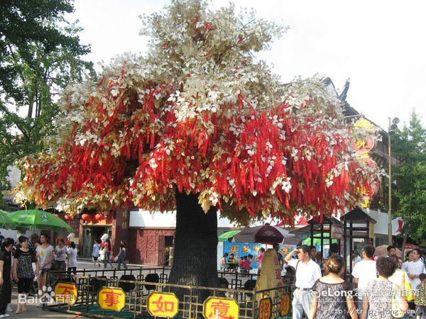
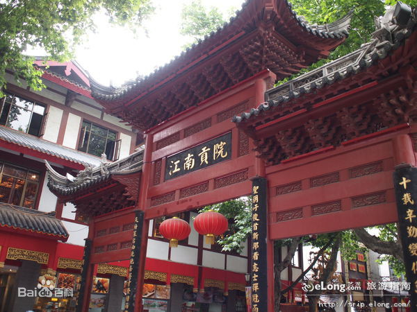

- 
- 
- 
- 
- 
夫子庙
简介
成人票：30元/人；学生票：15元/人；儿童票：10元/人
南京夫子庙位于南京市秦淮区秦淮河北岸贡院街、江南贡院以西，地处夫子庙秦淮风光带核心区，即南京孔庙、南京文庙、文宣王庙，为供奉祭祀孔子之地，是中国第一所国家最高学府、中国四大文庙之一，中国古代文化枢纽之地、金陵历史人文荟萃之地，不仅是明清时期南京的文教中心，同时也是居东南各省之冠的文教建筑群。
夫子庙是一组规模宏大的古建筑群，主要由孔庙、学宫、贡院三大建筑群组成，占地极大。有照壁、泮池、牌坊、聚星亭、魁星阁、棂星门、大成殿、明德堂、尊经阁等建筑。夫子庙被誉为秦淮名胜而成为古都南京的特色景观区，在六朝至明清时期，世家大族多聚于附近，故有“六朝金粉”之说，是中国最大的传统古街市，与上海城隍庙、苏州玄妙观和北京天桥为中国四大闹市，也是中国著名的开放式国家AAAAA级旅游景区和国际旅游胜地。
夫子庙始建于东晋咸康三年（337年），根据王导提议“治国以培育人材为重”，立太学于秦淮河南岸；北宋景祐元年（1034年），移东晋学宫于秦淮河北，并在学宫之前建庙祭奉孔夫子；南宋建炎年间遭兵火焚毁，绍兴九年（1139年）重建，称建康府学；元朝改为集庆路学；明初改为国子学，后改为应天府学；清初原府学改为上元、江宁两县的县学，咸丰年间再次毁于兵火，同治八年（1869年）重建；夫子庙四毁五建，最后一次破坏于1937年侵华日寇的炮火中，1984年后陆续修葺复建，1991年被评为“全国旅游胜地四十佳”。


历史变迁
夫子庙地处城南秦淮河畔,地理位置优越,交通十分方便,是南京人引以为自豪的历史遗迹和旅游景点,是新兴的文化、商业、游览中心和庙市合一的繁华之地。
夫子庙,又叫孔庙、文庙,是祭祀我国著名的大教育家、思想家孔子的地方。孔子在古代被人们尊称为孔夫子,故其庙宇俗称"夫子庙”。由于儒学的正统地位,它的创始人孔子备受封建社会历朝历代的统治者和土子们的尊崇,祀奉他的孔庙遍布全国各地,有的地方还不只一个。夫子庙作为封建士子崇拜的场所,大多与教育设施(如学官、贡院等)布置在一起,即所谓的庙附于学,一般是在学宫的前面或一侧。
历史上,南京城区的夫子庙曾有三处,一处在今市政府大院内,另一处在朝天官。现在我们要参观、游览的,是第三处,也是最有名气的一处。它是宋景佑元年(1034年)从朝天宫迁来的,初为建康府学,元为集庆路学,明初为国学,后为应天府学,清迁出府学,改为江宁、上元两县学。咸丰年间毁于兵火,同治年间(1869年)重建,抗战中为日军焚毁。
现存夫子庙为80年代初重建。它采用前庙后学,孔庙在前,学宫在后,后来设立的贡院被布置在学官的左侧。因此,南京夫子庙比较完整的格局包括三部分,即孔庙、学宫、贡院。


文化特色
夫子庙供应的传统食品和风味小吃不下200种。夫子庙饮食文化源远流长，可以远溯到六朝时期，明清两朝尤盛，各派菜系和小吃争奇壮举胜，风味独具。改革开放以来，市政府对散落民间的风味小吃发掘整理，在继承传统特色的基础上进行创新，形成了以“秦淮八绝”为代表的秦淮风味小吃。
夫子庙小吃供应干稀搭配，荤素相间，穿插民俗表演，具有浓郁地方特色和文化氛围，使餐饮过程同时成普文化欣赏的过程，体现了饮食和文化的精美结合，对中外游客产生着久远的吸引力，成为夫子庙旅游经济的重要支柱和这一地区的特色文化。

南京夫子庙灯会是流传于南京地区的特色民俗文化活动，又称"金陵灯会"，主要在每年的春节至元宵节期间举行。早在南朝时期就有元宵灯会，当时的盛况堪称全国之冠。明初以来，南京的元宵灯会活动就逐渐享有"秦淮灯彩甲天下"之美誉，著名的秦淮河"灯船"也随之蜚声天下。20世纪以后，灯会有了进一步的扩展，秦淮灯彩的扎裱技艺也不断提高，并推动了南京剪纸、空竹、绳结、雕刻、皮影、兽舞、秧歌、踩高跷等民间艺术的发展。南京夫子庙灯会的历史源远流长，根据文献记载，早在南朝时期，都城南京就出现了举办传统元宵灯会的习俗，其盛况堪称全国之冠。自明初洪武帝朱元璋在南京倡导元宵灯节活动以后，南京逐渐开始享有了“秦淮灯火（彩）甲天下”的美誉，秦淮河悬挂花灯的画舫（俗称“灯船”）随之蜚声天下。
历史上的南京夫子庙灯会主要分布在南京秦淮河流域，20世纪以后它主要集中在夫子庙地区，已经扩展到“十里秦淮”东侧五里地段，核心区域包括夫子庙、瞻园、白鹭洲公园、吴敬梓故居陈列馆、江南贡院陈列馆、中华门瓮城展览馆及中华路、平江府路、瞻园路、琶琵路一带。
南京夫子庙灯会作为一项重要的民俗文化活动，是历代南京民众延续和传承民俗文化的重要空间，长久以来，它已成为秦淮文化的重要组成部分。南京本土和外来的文化艺术贯穿于灯会中，构成其艺术内涵。